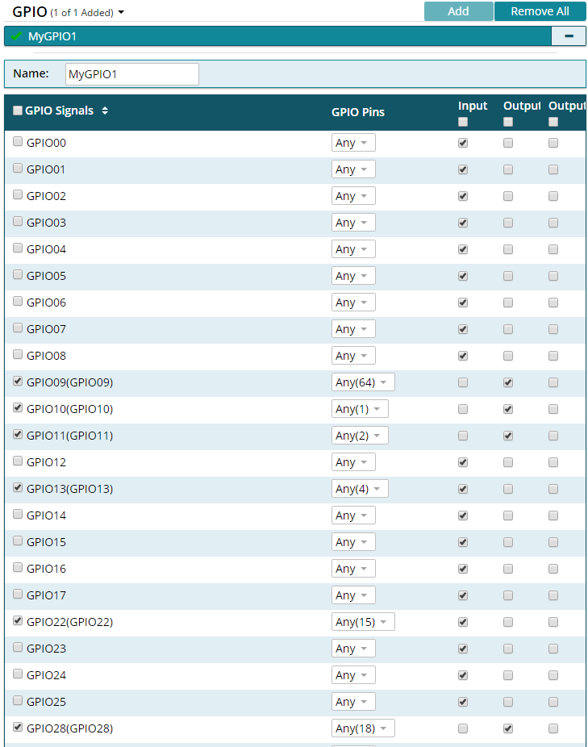
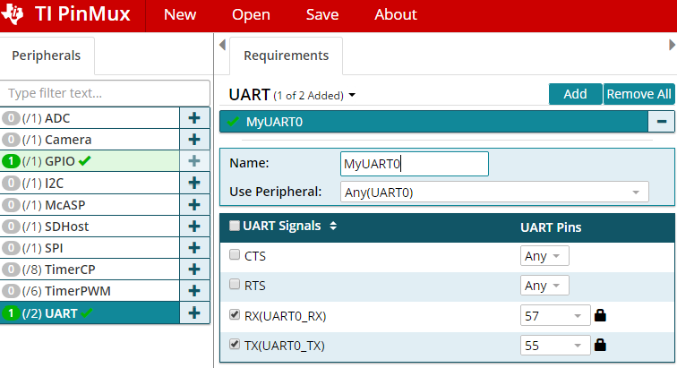
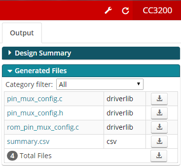
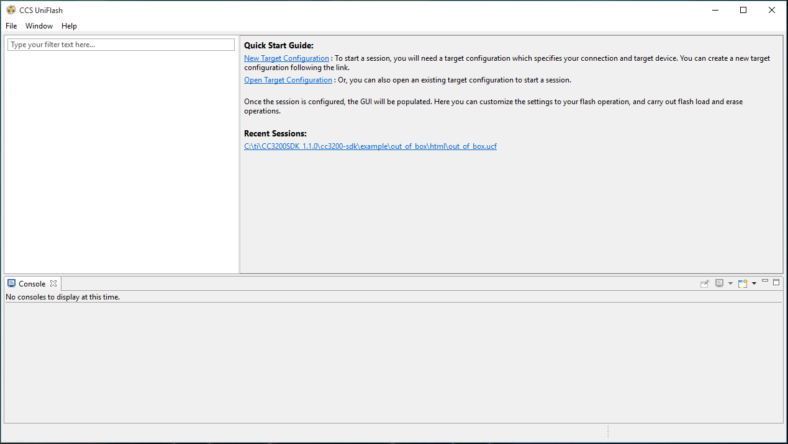
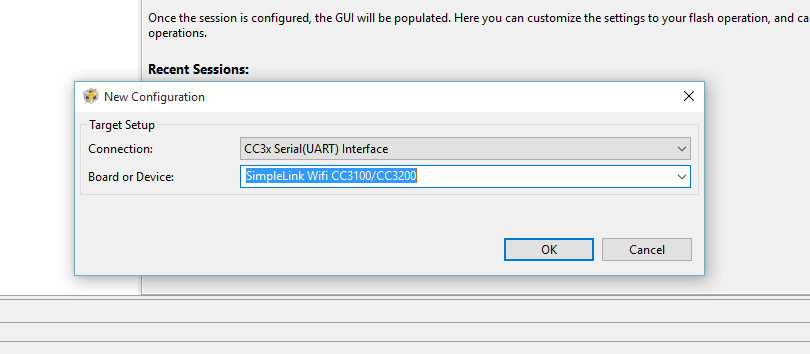
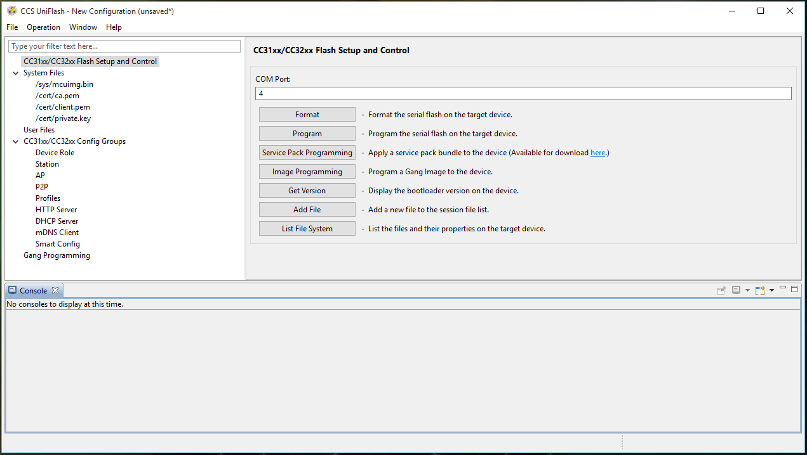
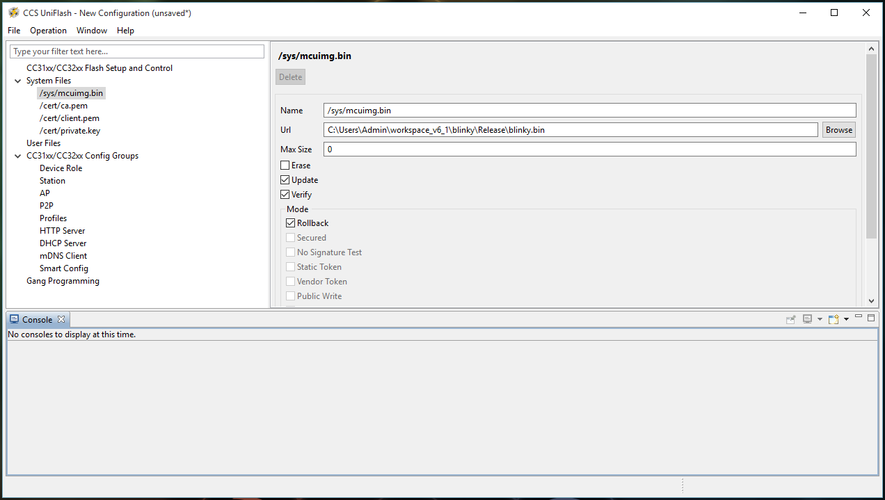
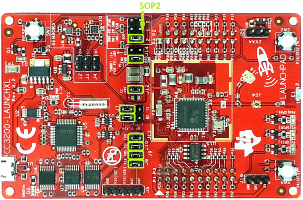

Lab 1 - Development Tools Tutorial and Lab Introduction
Overview
This tutorial will cover the basic software development tools that will be used in this course, including Code Composer Studio (CCS), CCS UniFlash, and the TI Pin Mux Tool.
Learning Objectives
At the end of this lab, students should be able to:
- Know build and flash process for microcontrollers
- Use the CCS IDE on their local machine
- Set up new projects for the CC3200
- Configure build settings for CC3200 projects
Requirements and Dependencies
Hardware Requirements
- SimpleLink CC3200 LaunchPad (CC3200-LAUNCHXL)
- Micro-USB to USB-A cable
Note: Do not lose the shorting/jumper blocks that come with the board. They are used to configure different hardware functions on the board, and may be needed for this and future labs.
Software Dependencies
- Windows 10 or later
- Code Composer Studio (CSS) IDE [latest]
- CC3200 Software Development Kit [latest]
- CC3200SDK-ServicePack [latest]
- TI sysconfig tool [latest]
- CCS UniFlash [v3.4.1.x] or cc3200tool [latest]
- Terminal Emulator (e.g. PuTTY or TeraTerm)
If you have not set up your software dependencies on your local machine, please do this first by following the lab setup instructions.
Background - Compiling and Flashing for Embedded Systems
As one of the course prerequisites is C programming, we will not spend much time introducing the C programming language. However, it is important to have a solid grasps of the basic principles of compiling C programs, and how programs are loaded (or flashed) onto microcontrollers.
Compiling
Compilation is the process of converting
higher-level source code, such as C, into executable machine code.
Typically, the C compilation process is made
up of several steps. Usually, the source code first undergoes
preprocessing, then each .c file
is individually compiled, or translated, into
assembly and stored in an object
file (.o file), which are finally
linked together into an executable file
format, such as ELF. The elf file can then be
converted into simpler formats, such as raw binary or Intel Hex, which
are more suitable for loading onto the microcontroller.
Because compilation can be time consuming, object files can be combined into a single library file that is easier to move and manage. Instead of passing all of the associated object files to the compiler, a single library file can be passed instead. Note the difference between a static library and a dynamic library. In the context of embedded systems, when we refer to a library, we usually mean a static library.
This is relevant to how CCS compiles projects. Rather than recompile all of the SDK driver files, a driver library comes precompiled that the TI compiler can reference in the linking phase. Understanding the linking process will help you debug issues related to static libraries.
Flashing
Flashing is a shorthand term for loading the compiled firmware onto hardware, typically into non-volatile memory, such as flash memory. Occasionally, however, the firmware may be loaded into RAM for debugging purposes. Where the firmware gets located in the memory address space is determined by the linker script, and needs to be passed to the tools used to upload the program into the MCU's memory.
Specific information on what happens during the flashing process depends upon a number of factors, such as hardware organization and memory map, the presence of an operating system, and the underlying processor architecture; however, much of this is out of scope for this course.
For this class, since we are using the CC3200, we can only flash using TI's UniFlash tool, as CCS will only load the program into RAM for debugging. To program either RAM or Flash, the CC3200 Launchpad must have the SOP2 Jumper on before it is connected to the computer. If the SOP2 Jumper is not connected, the CC3200 will automatically try to boot from flash memory before the computer can connect to it.
Part I: Testing Examples in Code Composer Studio
In this part, you will create a workspace and import two example programs to test with your CC3200 processor.
Note: When you work on a lab PC, you should always save your work on a remote device before you leave. Do not count on your files remaining on the drive of the lab PC. We highly recommend using GitHub to backup your work regularly.
Blinky Example
Lauch Code Composer Studio (CCS) from the desktop icon or from the Start Menu.
CCS will prompt you to select a directory for your workspace. Enter a directory in your user space, such as:
C:\Users\\*your_name*\eec172\lab\ccs_workspace
Do NOT check the box “Use this as the default and do not ask again” on any of the lab machines since these machines will be shared among many users. Even on your own machine, we recommend that you avoid this option.
Select Import Project from the Getting Started page, or Right-Click in the Project Explorer and go to
Import -> CCS ProjectsChoose Select search-directory and enter the cc3200sdk path. This may also be found using the Browse option. If the default install location was used, it should be:
C:\ti\CC3200SDK_1.5.0\cc3200sdkSelect the
blinkyproject and click Finish.
In Project Explorer, right-click on
blinkyand select Properties. Ensure that the Compiler version is set toTI v20.x.x.LTS.While you are here, you should explore other properties to familiarize yourself with the interface. For example, expand ARM Linker and select Basic Options in order to see the default heap and stack sizes for this project. When you are done examining project properties, click Cancel if you made no changes, or Apply and Close if you needed to update the compiler version.
Build the
blinkyproject. This can be done in a number of ways:- Click the hammer icon while the
blinkyproject is selected. - Select Project > Build Project while the
blinkyproject is selected. - Right-Click the
blinkyproject and select Build Project
The project should build without any errors or warnings. If you encounter errors, first attempt to solve them by referring to the console output log and exercising your Google-Fu to search for solutions. If nothing seems to work, then ask the TA if you are still experiencing the problem.
- Click the hammer icon while the
Connect the CC3200 LaunchPad to your host computer using the supplied USB cable.
Click the bug icon or select Run > Debug to lauch the Debug Perspective.
The first time you attempt to run a program on the CC3200, you will get the following message:
You require a target configuration to start a debug session. Do you want to create a new target configuration file and open it in the editor?
Click Yes, then give the new Target Configuration file a name, such as ``cc3200.ccxml`.
Click the box “Use shared location” so that this configuration file can be used for all of your projects in this workspace. Then click Finish.
For the Connection, select Stellaris In-Circuit Debug Interface and select the box for “CC3200” for the board or device. Then scroll to the right of the window and select Save.
You should now see
cc3200.ccxmllisted under theUser Definedfolder in the "Target Configurations" window. Make sure thatcc3200.ccxmlis selected as the default target configuration. Close thecc3200.ccxmlwindow and click the bug icon or Run > Debug again. When running in debug mode, your program will be loaded into the CC3200’s RAM. (Make sure that the LaunchPad is still connected to the PC via the USB cable.)Click on the green “Play” button icon or select Run > Resume or type F8 to run the program. You should see the red, yellow and green LEDs blink in a continuous sequence. Examine the program to see how it works.
Lab Checkoff Task 1
Make a simple modification to make the LEDs blink faster than in the default program. For example, you can easily make the LEDs blink two times to ten times faster with simple code modifications. Flash the code again and verify that the program works as expected.
Demonstrate the modification to your TA to receive checkoff. You may continue to the next part in the meantime.
Uart Demo Example
Follow steps 1 and 2 above to import the uart_demo project. Build the firmware as you did for
blinkyproject, then upload the project via Debug on CCS. Do not hit the Play button yet.Open a serial terminal window to connect to the CC3200 via UART.
Windows: PuTTY or TeraTerm
To determine which COM port to connect to, open Windows Device Manager (
Start Menu -> Windows System -> Control Panel -> Hardware and Sound -> Device Manager) and expand Ports (COM & LPT). Note which COM Port corresponds to the CC3200.Configure terminal emulator with the corresponding COM port and set the baud rate to 115200
Alternatively, in CCS itself:
Go to
View -> Terminaland click the smallOpen a TerminalIcon.Click the dropdown and select
Serial Terminal.Choose the right COM port, and hit
OK
MacOS: cc3200tool in Terminal
Open Terminal, then enter the following commands:
conda activate cc3200 cc3200tool term 115200Use
Ctrl+Bto stop the terminal.
Note: This assumes you have followed the install instructions for MacOS and installed cc3200tool in the cc3200 conda environment
Once your terminal window is open, run the
uart_demoprogram in the CCS Debug window. Verify that the program echoes text that you type into the terminal window using the keyboard.
Part II: Lab1 Application Program Exercise
In this part, you will develop a simple program that interfaces to a console window and to switches and LEDs on the CC3200 LaunchPad. You will also configure a signal on the P2 header as a general purpose output that you will control based on the switch inputs and verify on an oscilloscope. The complete program specifications will be presented later.
Create a project in CCS
Instead of creating a new, empty project, it is easier to import an example project from the CC3200SDK and modify that project according to the new project specs. In this case, we recommend that you start with the
blinkyproject since it is similar to the new project you will develop. Note that you cannot importblinkyinto your project when it is already there. However, you can rename the existingblinkyproject to a new name, such aslab1-pt1. This way, you could re-import the originalblinkyproject into your workspace, if desired.Configure the pins for your project using the TI SysConfig Tool
The TI SysConfig tool (formerly the TI Pin Mux tool) is a utility used to select the appropriate pin multiplexing configuration to satisfy the application requirements.
This tool makes it easy to understand the various pin configuration options and to implement your desired pin configuration without error. You can use either the Cloud-hosted Pin Mux Utility or the stand-alone desktop SysConfig tool.
For the purposes of this lab, the instructions will be for the desktop SysConfig tool. For information on using the TI Cloud-hosted tool, refer to this video.
Launch the TI SysConfig Tool from either the Start menu or the desktop icon, if it exists. Select CC3200 as the device and click on the Start button.
We will first configure the desired GPIO signals. For this project, we want to interface to the following devices/pins on the CC3200 LaunchPad: Red, Yellow and Green LEDs, SW2 and SW3, P18 on the P2 header, and the UART Rx and Tx pins which interface to the console window. To determine which pins or GPIO signals you need to specify, consult the LaunchPad schematic (CC3200-LAUNCHXL_SCH_Rev4p1-a.pdf) available on the course website.
Note: Make sure that you can verify the following signal names and pin numbers on the schematic. (It will be very important that you consult this schematic when deciding which pins to use for hardware interfacing. Many of the pins that are brought to the headers are already being used on the LaunchPad board and are not actually available for general use.)
Signal Name Pin Number Device GPIO_9 64 Red LED GPIO_10 1 Yellow LED GPIO_11 2 Green LED GPIO_13 4 SW3 GPIO_22 15 SW2 GPIO_28 18 P18 on P2 header Select the GPIO peripheral in the Peripherals tab on the left.
Click on the Add button in the Requirements tab so that you can add GPIO signals.
Unselect all the GPIO signals by unchecking the box labeled Signals; then, add the GPIO signals that you want to use in your project by checking the corresponding box and choosing the pin number from the dropdown box in the middle column.
Select the I/O mode (Input, Output or Output OD (Open Drain)) for each of your signals from dropdown menu in the right-side column. In this design, the switches should drive input pins and outputs signals (not open drain outputs) will drive the LEDs and P18.
Verify that the pin numbers match the ones in the table above. If they don’t match, use the pull-down option to select the correct pin number. Your GPIO section should look like the following screen-shot. (The name of the module is arbitrary.)
 PinMux Configuration of GPIO signalsNext configure the UART peripheral. Note that you will need to configure the UART0_RX to pin number 57 and UART0_TX to pin number 55 as these are not the default pin assignments for these signals on the CC3200 LaunchPad. The lock icon shows that you have locked that pin number to the specified signal. For details, see the UART MUXING and the EMULATION sub-circuits on the CC3200 LaunchPad schematic. Your UART configuration should look similar to the screen-shot below.
Signal Name Pin Number Device UART0_RX 57 FTDI_TX UART0_TX 55 FTDI_RX  PinMux Configuration of UART signalsSave your configuration to a different location from your project directory. For example, you can use the name
lab1and the file will be stored aslab1.syscfg. You can open this file later with the SysConfig Tool to change your pin configuration instead of starting over.Save
pin_mux_config.candpin_mux_config.hto your project directory by clicking on the adjacent download/save button and navigating to the appropriate workspace directory.Remove the old
pinmux.candpinmux.hfiles from your project directory. Inmain.c, modify the\#includeto usepin_mux_config.hinstead ofpinmux.h. SysConfig Downloadable Output Files
Lab Checkoff Task 2
Modify your program code to meet the application specifications:
When your program starts, it should display a message on the console window (i.e. TeraTerm or other terminal emulator) with a header and usage instructions as shown below. A good example project to look at for basic UART functions is
uart_demoin the CC3200SDK examples folder.**************************************************** CC3200 GPIO Application **************************************************** **************************************************** Push SW3 to start LED binary counting Push SW2 to blink LEDs on and off ****************************************************Your program should poll the SW3 and SW2 switches on the CC3200 LaunchPad. When SW3 is pressed, you should start a binary counting sequence on the LEDs, counting from 000 – 111 continuously on the three LEDs. The count should be relatively slow so that you can see each count value easily. You should also print a message to the console “SW3 pressed”. This message should not be printed again until after SW2 has been pressed.
When SW2 is pressed, your program should blink the LEDs ON and OFF in unison. Again, the blink pattern should be relatively slow so that you can see each pattern clearly and easily. You should print the message “SW2 pressed” to the console. This message should not be printed again until after SW3 has been pressed.
Set the output signal P18 high whenever SW2 is pressed and low whenever SW3 is pressed. You can verify this signal using an oscilloscope.
NOTE: For polling the switches and controlling the outputs, you can use CC3200 Peripheral Driver Library APIs such as GPIOPinRead() and GPIOPinWrite(). The CC3200 Peripheral Driver Library User’s Guide can be found at
http://software-dl.ti.com/ecs/cc31xx/APIs/public/cc32xx_peripherals/latest/html/index.html
Verify your program using the CCS Debug mode.
Demonstrate your application to your TA to receive checkoff. You may continue to the next part in the meantime.
Part III: Programming Flash Memory
In this part, you will learn how to program the external flash memory so that the program will remain in non-volatile memory through power cycles. This section will demonstrate how to load the blinky program onto the external flash device on the CC3200 LaunchPad.
Windows: CCS UniFlash
On launching the UniFlash tool, you will see a window as shown below. To start, click on the New Target Configuration link under the Quick Start Guide heading, or under the
File \> New Configurationon the menu bar. This should open up the new configuration window. Launch Screen of the CCS UniFlash toolFrom the Connection drop down menu, select the ‘CC3x Serial(UART) Interface’ option, and the ‘SimpleLink Wifi CC3100/CC3200’ for the Board or Device in the screen-shot below. After the selections are made, click OK.
 New Configuration WindowThis will open up the main screen shown below. First, the correct COM Port for the device must be identified to the UniFlash tool. If you are unsure of which COM Port to use, plug in the CC3200 Launchpad and open up the Device Manager to check. In this example, the CC3200 Launcpad was on COM Port 4. Enter the COM Port number into the text box, and then select the
/sys/mcuimg.binoption on System Files on the left of the screen. CCS UniFlash Flash Setup and Control ScreenThis panel will allow you to identify the compiled
.binfile that will be loaded into the flash memory. Click on the Browse button next to the Url text box, and locate the.binfile that you would like to load into flash. For this example, the compiledblinkyexample,blinky.bin, was selected from the CCS workspace. In addition, make sure the Update, and Verify check boxes are selected. The UniFlash tool should now be ready to flash the CC3200 LaunchPad hardware. System File Options ScreenBefore connecting the CC3200 Launchpad to the computer, a jumper will need to be placed on SOP2 as shown below. This will allow the flash memory to be programmed by CCS UniFlash, and will prevent the previously flashed program from being executed.
Minimum Jumper Configuration for Flashing the CC3200
Source: Figure 1 of the CC3200 SimpleLink Wi-Fi and IoT Solution With MCU LaunchPad Getting Started GuideOnce you have verified the jumpers are correctly set, connect the Launchpad to the computer, and return to the Flash Setup and Control panel that was shown earlier and click the Program button. This should successfully program the board.
To see the program run, disconnect the Launchpad from the computer, remove the SOP2 jumper, then reconnect the board to the computer.
Do not lose the jumper since you will often need to use it.
The
blinky.binfile should now run at launch instead of the out of the box demo program (or whatever program was previously programmed in flash). If this does not work, double check that the necessary jumpers are placed on the Launchpad and that the options on the/sys/mcuimg.binpanel are set correctly.
MacOS: cc3200tool
Open a Terminal and navigate to the folder where your
blinky.binfile is saved. Then run the following commands:conda activate cc3200 cc3200tool --sop2 \~dtr --reset prompt \ format_flash --size 1M \ write_file blinky.bin /sys/mcuimg.binFollow the prompts that the tool prints to the console. Here is a sample of what you should see:
// testing $ cc3200tool --sop2 \~dtr --reset prompt \ format_flash --size 1M \ write_file uart_demo.bin /sys/mcuimg.bin 2024-01-09 22:52:37,850 -- Connecting to target... Reset the device with SOP2 asserted and press Enter 2024-01-09 22:52:45,141 -- Connected, reading version... 2024-01-09 22:52:45,156 -- connected to target 2024-01-09 22:52:45,156 -- Version: CC3x00VersionInfo((0, 4, 1, 2), (0, 0, 0, 0), (0, 0, 0, 0), (0, 0, 0, 0), (16, 0, 0, 0)) 2024-01-09 22:52:45,156 -- This is a CC3200 device 2024-01-09 22:52:45,156 -- Switching to NWP bootloader... 2024-01-09 22:52:45,170 -- Switching UART to APPS... 2024-01-09 22:52:45,181 -- Resetting communications ... 2024-01-09 22:52:48,422 -- timed out while waiting for ack 2024-01-09 22:52:48,679 -- Uploading rbtl3100s.dll... 2024-01-09 22:52:48,683 -- Getting storage list... 2024-01-09 22:52:49,721 -- APPS version: CC3x00VersionInfo((0, 4, 0, 2), (0, 0, 0, 0), (0, 0, 0, 0), (0, 0, 0, 0), (16, 0, 0, 0)) 2024-01-09 22:52:49,721 -- Formatting flash with size=1024 2024-01-09 22:52:50,746 -- Uploading file uart_demo.bin -> /sys/mcuimg.bin [13408, disk=13408]... .... 2024-01-09 22:52:51,243 -- Getting storage info... 2024-01-09 22:52:51,255 -- storage #2 info bytes: 0x10, 0x0, 0x1, 0x0, 0x0, 0x0, 0x0, 0x0 2024-01-09 22:52:51,255 -- Getting storage list... 2024-01-09 22:52:51,282 -- Reading raw storage #2 start 0x0, size 0x2000... ................................ 2024-01-09 22:52:51,819 -- [1] detected a valid FAT revision: 3 2024-01-09 22:52:51,819 -- Getting storage list... 2024-01-09 22:52:51,845 -- Reading raw storage #2 start 0x1774, size 0x2774... ........................................ 2024-01-09 22:52:52,501 -- selected FAT revision: 3 (active) 2024-01-09 22:52:52,502 -- FAT r3, num files: 1, used/free blocks: 9/247 2024-01-09 22:52:52,502 -- All commands done, bye.
The
blinky.binfile should be located in a subfolder of your project directory in your workspace.
Lab Checkoff Task 3
Use the CCS UniFlash utility to program your application into the on-board serial Flash chip.
Once your application program from Part II works, load it into the serial Flash chip on the CC3200 LaunchPad so that your program can run without downloading the code from CCS into RAM in Debug Mode.
To test your program, power the LaunchPad by connecting the USB cable to a host PC. Then open a terminal window using TeraTerm or PuTTY on the appropriate COM port. To see your header message, press the Reset button on the LaunchPad to restart your application program.
Demonstrate your working program to your TA to receive checkoff